01
溶接で、形を戻す。
RMX250のサイレンサーステー。取付部が破損し、無理に固定されていたところへ、プレートを作ってアルミ溶接をしています。
溶接など加工が必要な場合は、バイク以外でも相談できる、と書かれています。ブログには船外機のシリンダー溶接の見出しもあります。
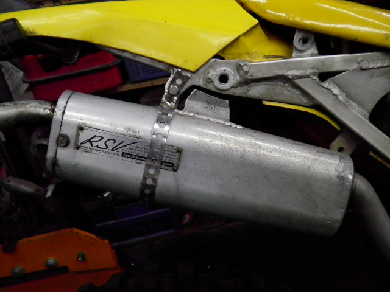
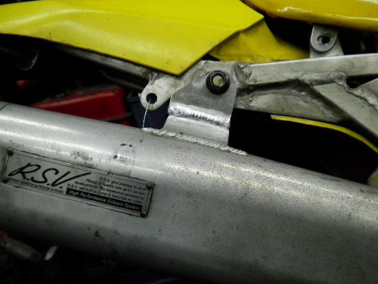
ENGINEERED TO REPAIR
直す技術を、伝える。
大阪市東淀川区・上新庄
一般整備から溶接・部品製作まで。
バイクの困りごとに、技術で向き合う。
MOTORCYCLE REPAIR / FABRICATION
CUSTOM WORK
お問い合わせは公式サイトのフォームを開きます。このデモから送信はできません。
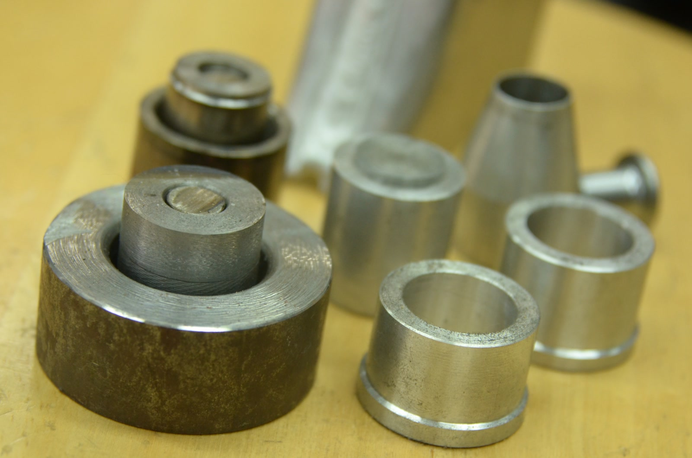
定休日の表記がページで分かれています。トップと2025年12月11日の記事は、2026年から毎週水曜と第1・第3木曜。店舗案内とお問い合わせは、水曜と第3木曜のままです。
塗装作業は終了しています。作業紹介に残っている塗装の写真は、過去の記録です。
エンジンオイルの供給不足のため、当店のお客様以外のオイル交換は休止、とトップで案内されています。
02 CAPABILITY
整備に加えて、溶接、旋盤、部品製作。公式サイトの作業紹介と店舗の文章から、確認できた仕事です。すべての修理を受ける、という意味ではありません。
01
RMX250のサイレンサーステー。取付部が破損し、無理に固定されていたところへ、プレートを作ってアルミ溶接をしています。
溶接など加工が必要な場合は、バイク以外でも相談できる、と書かれています。ブログには船外機のシリンダー溶接の見出しもあります。


02
フロントフォークのエア抜きに使う特殊工具です。アルミの丸棒から、旋盤で削って作っています。
同じ作業紹介には、アルミ（A2017）の丸棒からアンテナを削り出した事例もあります。自作パーツは「出来る限りの対応を致します」と書かれています。
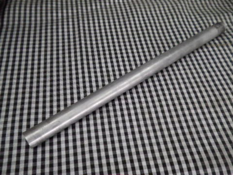
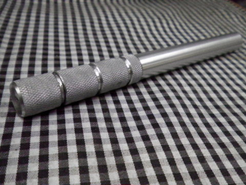
03
原付スクーターが中心の店です。修理は排気量に関係なく扱う、と公式サイトにあります。車検の相談先としても案内されていて、改造したバイクの車検は「一度ご相談ください」という書き方です。
下の写真はSR500のマフラー加工です。寸法の違うサイレンサーを、希望された状態で取り付けた完成写真です。
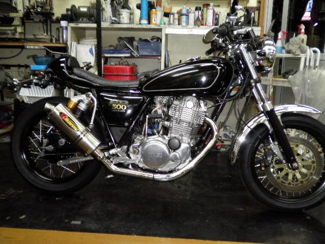
03 WORKS
写真と文は、公式の作業紹介に載っているものです。
01
フィンの割れを、溶接で盛って修正した事例です。
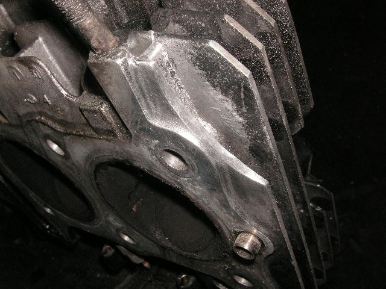
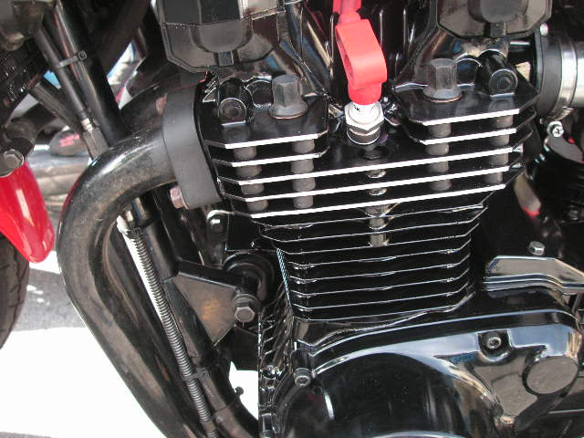
02
磨いたマフラーに、焼色を付けた加工です。作業紹介では、前後の写真として並んでいます。
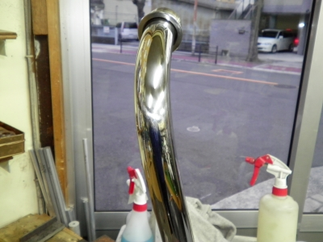
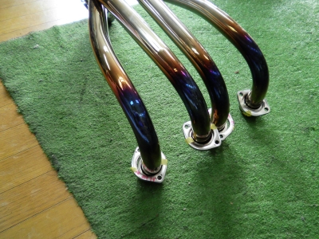
03
FCRを付けるためにアルミのケースを作り、車体へ取り付けた事例です。
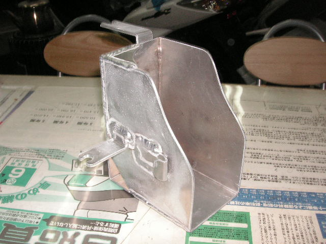
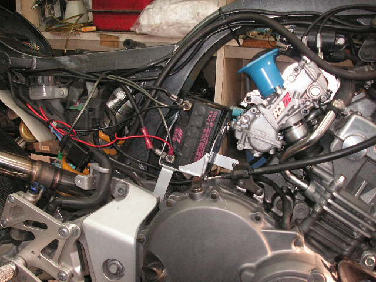
INDEX ほかの作業紹介
元の画像が小さいもの、上で写真を出したものも含め、作業紹介に載っている内容です。写真は公式の作業紹介で見られます。
凹みのあるタンクを板金し、ブラックに塗装。塗装作業は終了しているため、過去の記録です。
寸法の違うサイレンサーを取り付け、希望された状態で完了。完成写真は上の「技術」にあります。
転倒でフィンがかなり破損。溶接で盛って、元の形にした、と掲載されています。
折られたミラーの折れ込みボルトを、逆タップで抜いています。
割れていた箇所を溶接で修理し、補強を入れています。
アルミ（A2017）の丸棒を、旋盤で削って作っています。
ステーを作り、元のウインカー取付部を削除しています。
ハーレー用のオイルクーラーを、製作したアルミステーで取り付けています。
BOXを付けると後ステップが使えないため、プレートなどで移動しています。
キャリア部にサブタンクを取り付け、依頼どおり完了した、と掲載されています。
本文の要約はしていません。見出しと、公式記事へのリンクだけです。
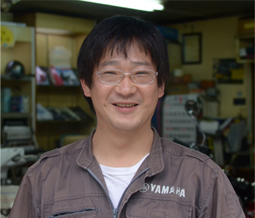
04 PRACTICE
専門用語ばかり使って説明されたり、理解出来なかったら見下された態度をとられたり…当店ではお客様の気持ちになって丁寧な接客やサービスを心掛けて営業しています。
モトショップズーム公式サイトの文章
公式サイトに、国家二級整備士（近畿二か第29665号）であると書かれています。
鈴鹿8時間耐久ロードレース等のメカニックとして参加した経験がある、と書かれています。
原付スクーターが中心の店です。修理は排気量に関係なく扱う、と案内されています。
05 CONSULT
公式トップの「このようなことでお困りですか？」と、同じページ内の案内から整理しています。条件があるものは、条件ごと残しています。
01
出来る限り対応する、と書かれています。溶接など加工が必要なら、バイク以外でも相談できます。
02
引越しや個人売買のあと、どこへ頼むか迷っている人向けの案内です。原付が中心で、排気量に関係なく修理もすると書かれています。
03
他店購入でも大丈夫、と案内されています。外車、部品が手に入りにくい旧車、無茶に仕上げられたカスタム車などは断ることがあります。部品を取り寄せできないバイクも断ることがあります。
04
フィンやケースの溶接、ステーやケースの製作、折れ込みボルト抜きが、作業紹介にあります。同じ症状でも受けられるとは限りません。
05
親身に聞く、と書かれています。来店か、問い合わせで相談する案内です。
06
「一度ご相談ください」という案内です。通ることを約束する書き方にはなっていません。
07
まずは相談してほしい、と書かれています。手続きと費用は、その相談で確認する案内です。
08
連絡すれば、都合に合わせて引き取りに伺う、とトップにあります。範囲と費用は、電話で確認してください。
06 HOW TO ASK
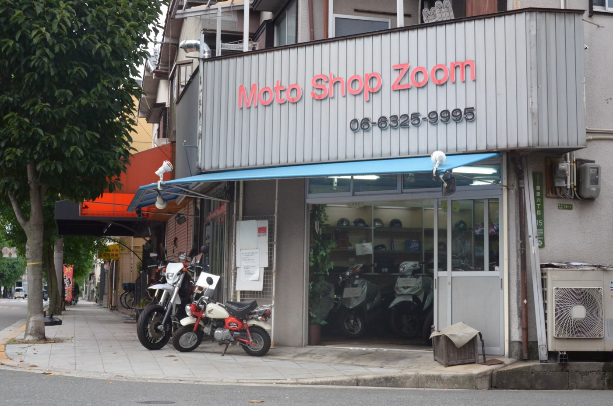
07 SHOP
NOTE FOR THE SHOP
この欄は提案デモの付記です。店舗の営業案内ではありません。公開や納品の前に、店舗と突き合わせてください。